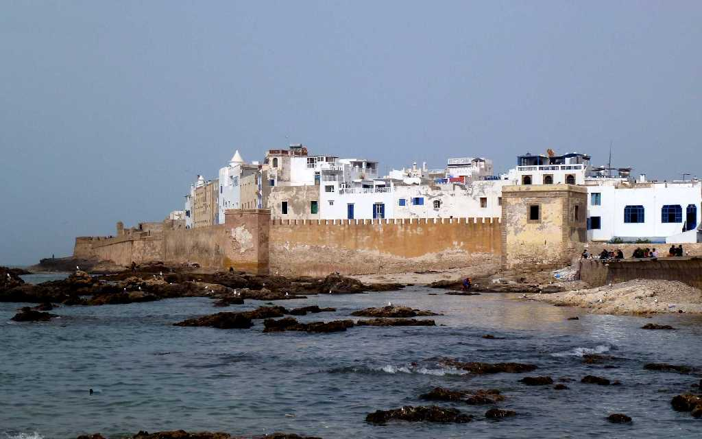
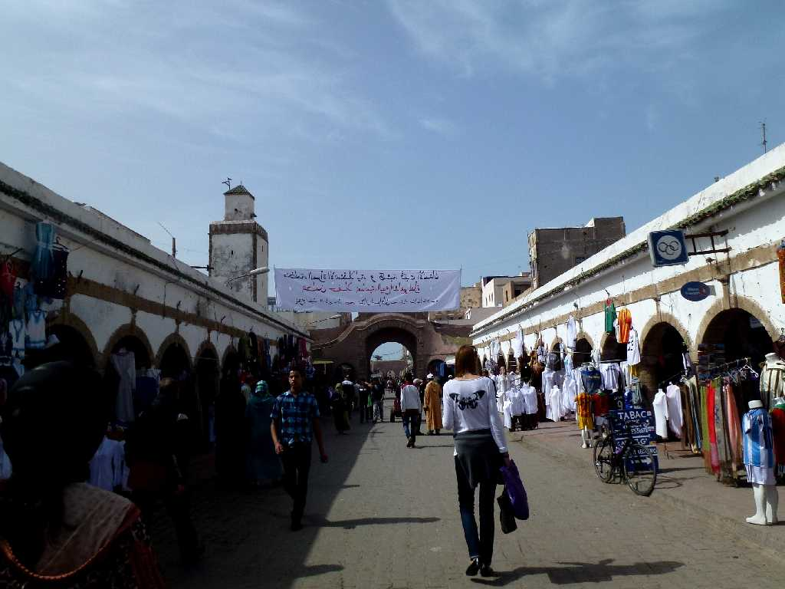
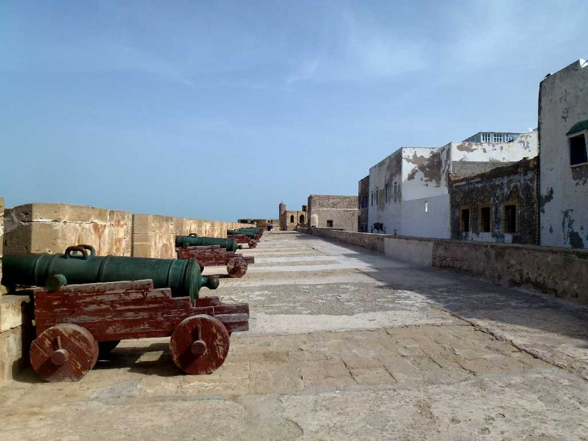
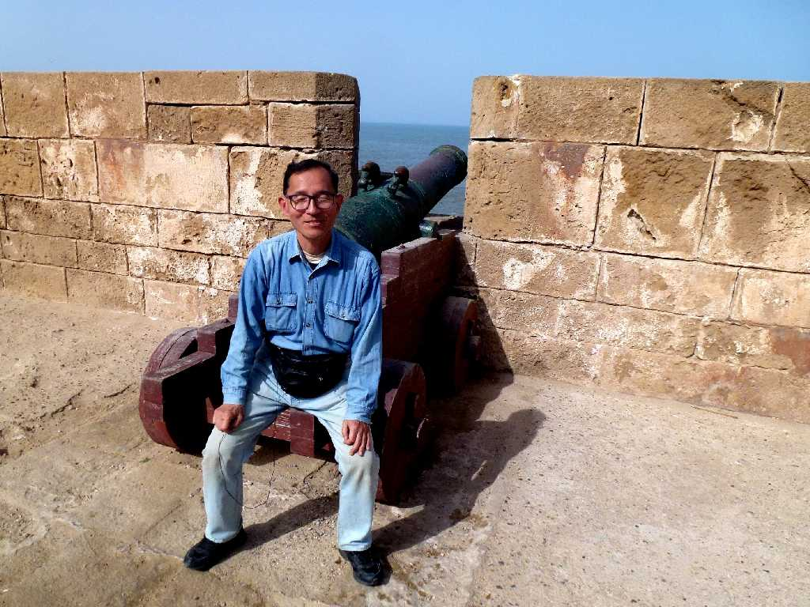
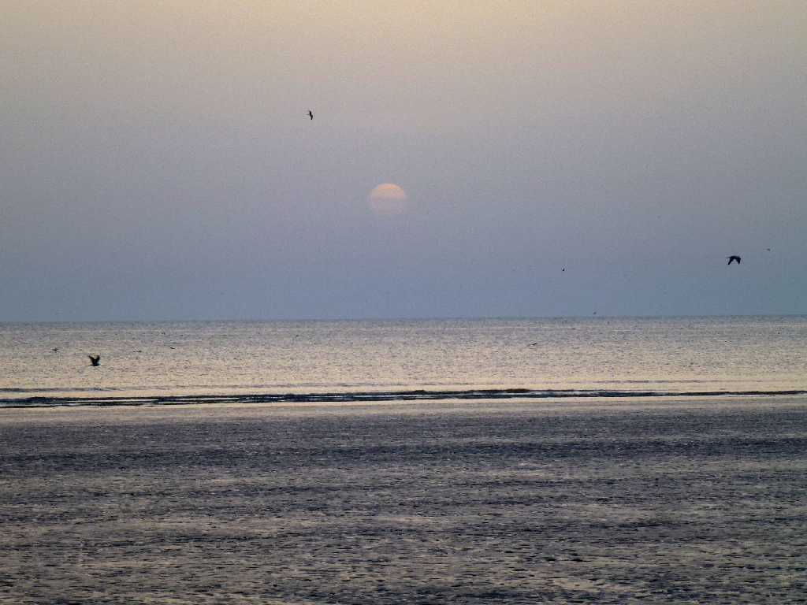
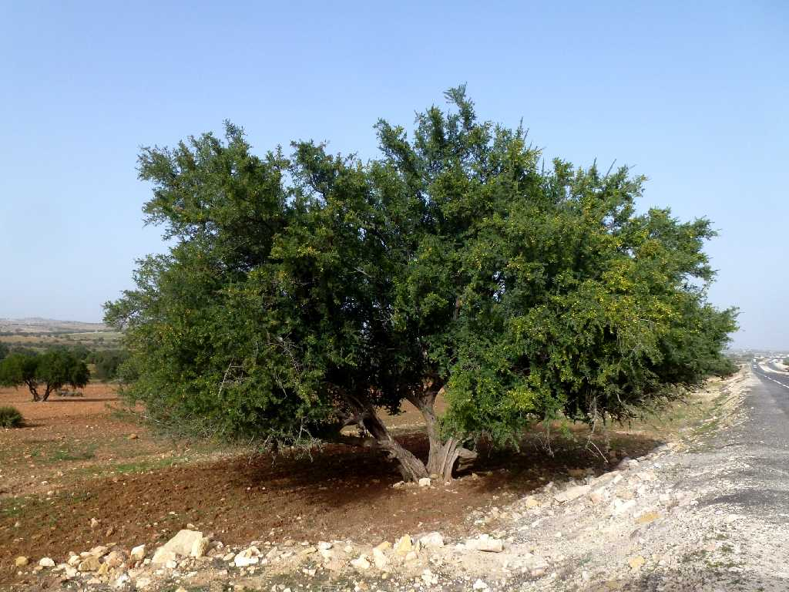

Essaouira
１５世紀に軍事と貿易の拠点としてポルトガル人が創り１８世紀にモハメッドベンアブダラ王によりｆ城壁が拡充され栄えた街エッサウィラ

Medina Essaouira
白を基調とした美しい旧市街 ポルトガル時代の旧名 Mogador

Skala de la Ville Essaouira
１８世紀にモロッコ王がアラブ形式の都市計画にヨーロッパの合理性を組み入れた都市を創り丈夫なボーバン様式の城砦を取り入れた

March 17 2014 Skala de la Ville

March 16 2014 18:38 Sunset Essaouira

Argan Essaouira
アルガンの木から取れるアルガンオイルはアンチエイジングオイルとして大人気 ここエッサウィラ周辺にしか育たないので貴重品となっている